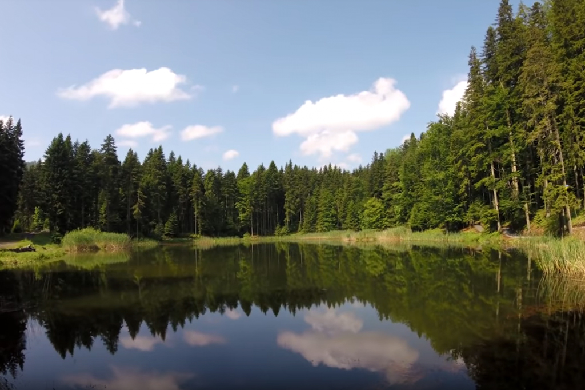
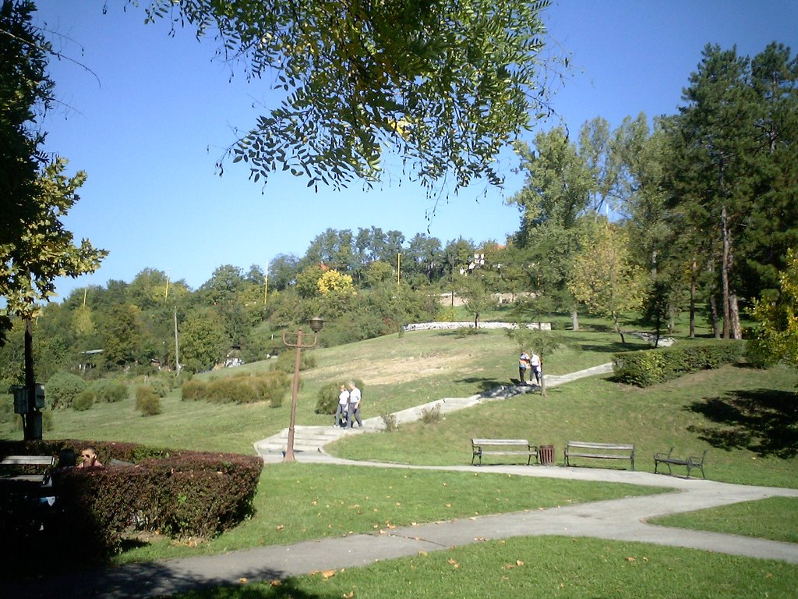
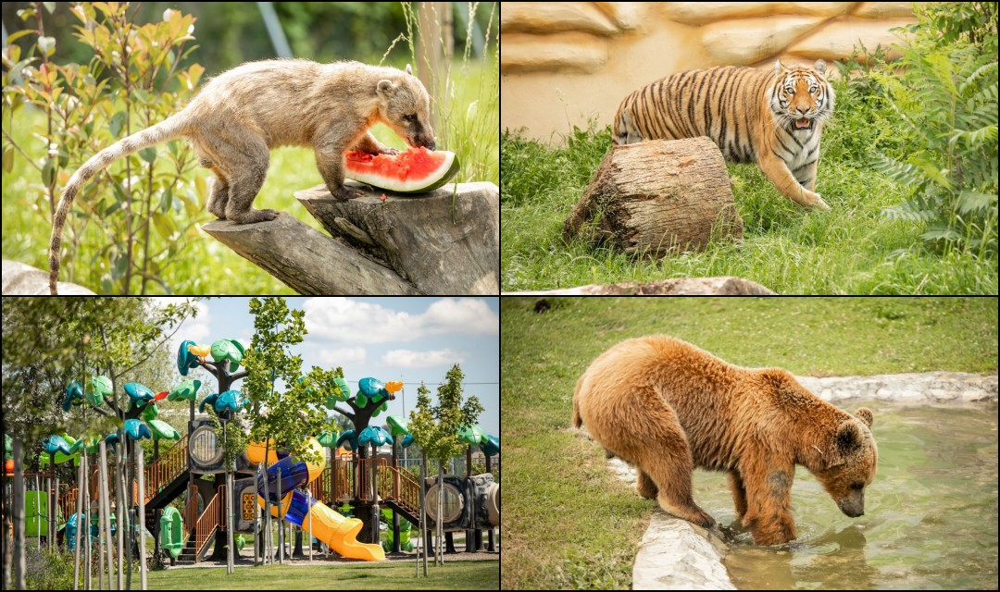
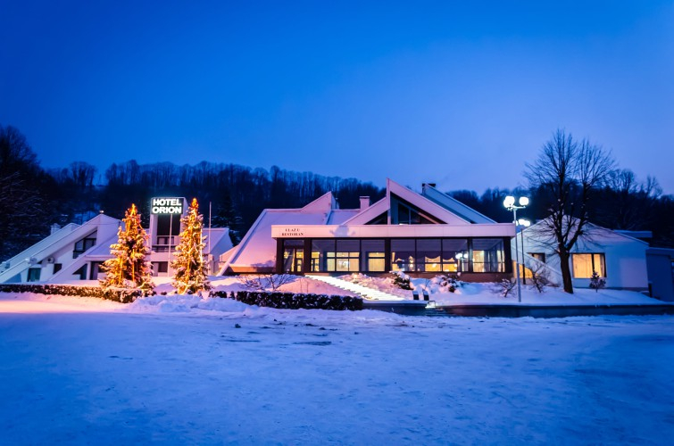
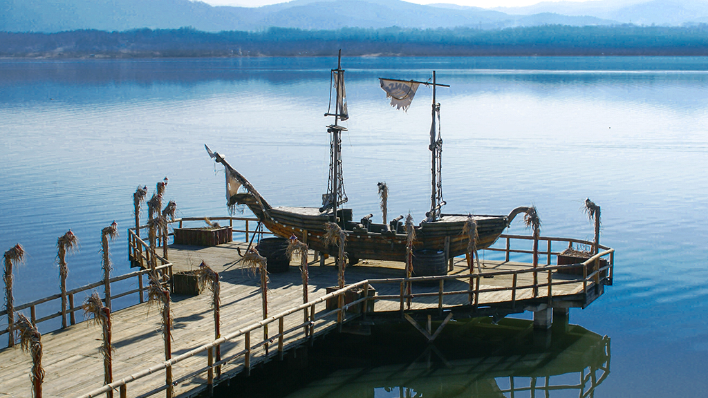
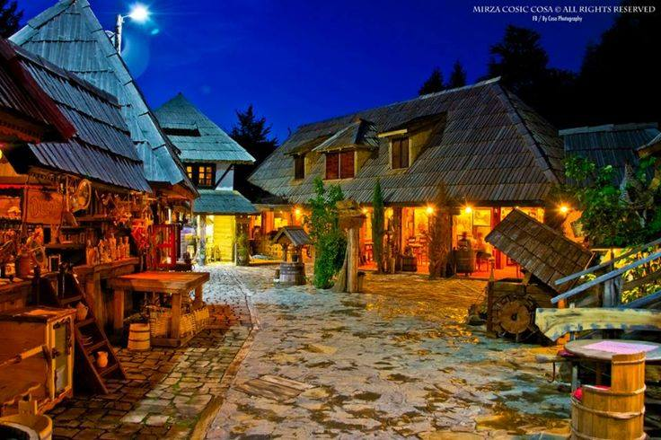
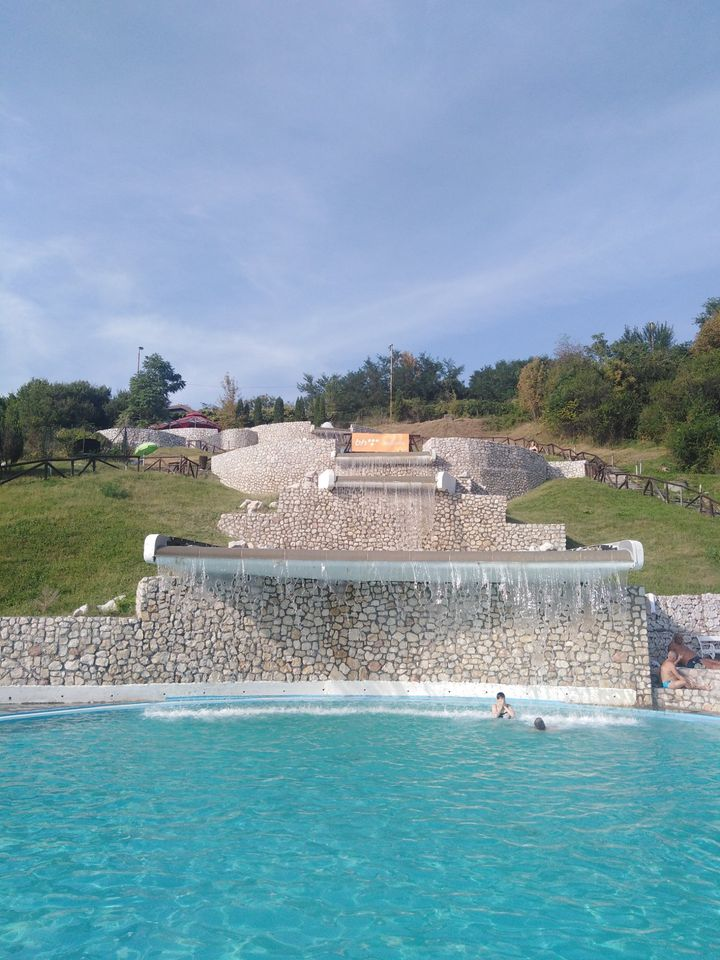
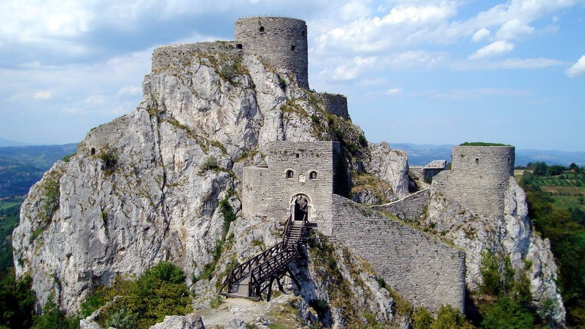
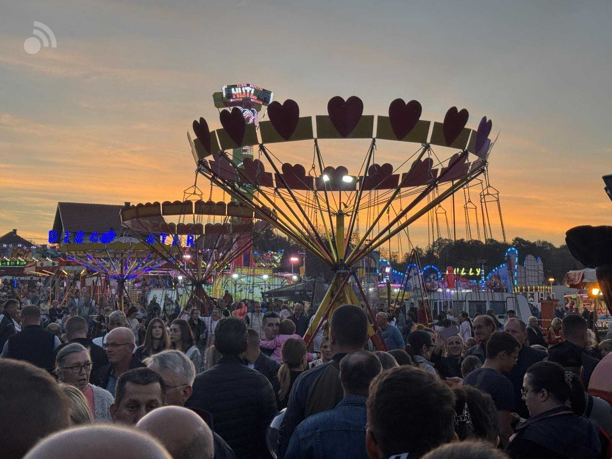
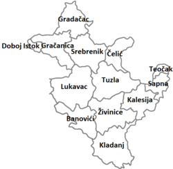

Konjuh
Idealna destinacija za planinare i ljubitelje prirode.
| Destinacija | Lokacija | Tip | Najbolji period | Cijena ulaza |
|---|---|---|---|---|
| Panonska jezera | Tuzla | Kupalište | Ljeto | 7 KM |
| Kula Gradačac | Gradačac | Historija | Cijela godina | 3 KM |
| PPG Jelen | Živinice | Priroda | Proljeće/jesen | Besplatno |
| Majevica | Sapna | Planina | Proljeće | Besplatno |
| Puračić vašar | Lukavac | Zabava | Oktobar | 2 KM |
| Vodopad Prokosovići | Lukavac | Priroda | Ljeto | Besplatno |
| Planina Konjuh | Banovići | Planinarenje | Jesen | Besplatno |

Idealna destinacija za planinare i ljubitelje prirode.

Poznato šetalište i mjesto za odmor u Tuzli.

Najveći zoološki vrt u Bosni i Hercegovini.

Moderni hotel sa bazenima u Srebreniku.

Poznato mjesto za ribolov i vikend odmor.

Tradicionalna bosanska atmosfera i domaća hrana.

S razlogom jedno od najpopularnijih kupališta u Bosni i Hercegovini.

Epicentar zanimljive histroije naše zemlje.

Luna park kao iz snova, izvor zabave i smijeha.

Tuzlanski kanton nudi veliki broj turističkih atrakcija, prirodnih ljepota, kulturnih znamenitosti i zabavnih događaja. Posjetioci mogu istražiti planine, jezera, historijske kule i uživati u tradicionalnim manifestacijama tokom cijele godine.
Turizam u ovom području razvija se iz godine u godinu, a sve više turista dolazi zbog prirode, hrane i gostoprimstva.